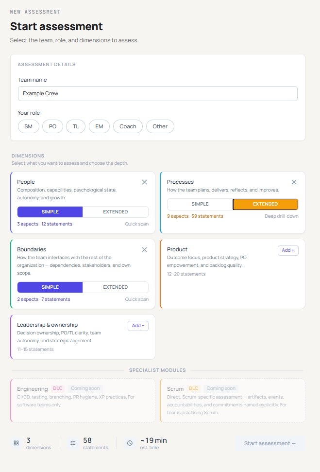
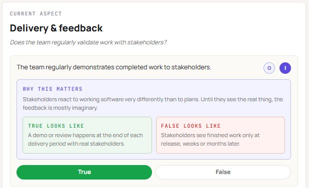
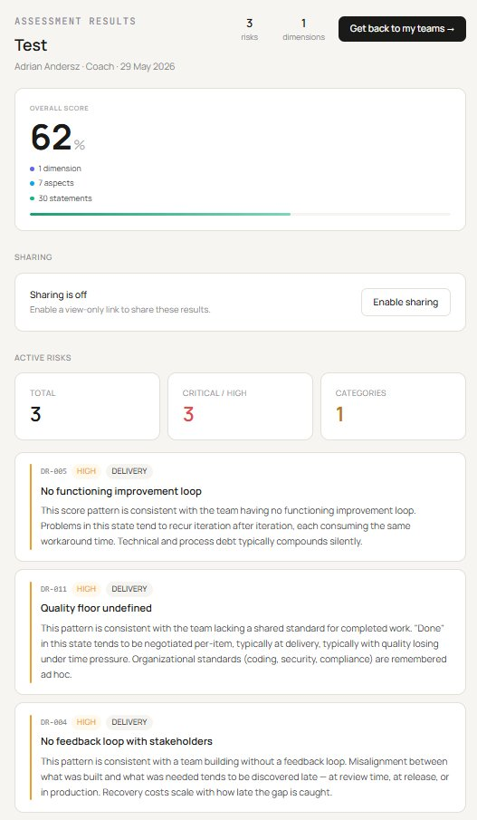
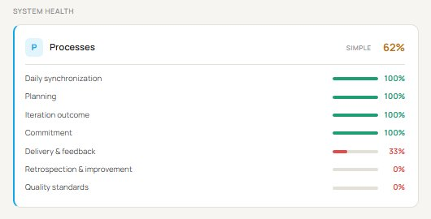
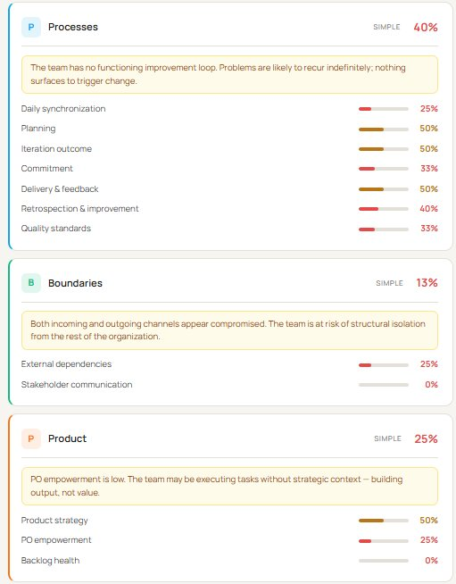

OPTICS measures
risk in systems.
It's not an agile-maturity score.
The kind of risk that surfaces later as cost, attrition, or late delivery - before anyone noticed anything was wrong.
The system is the team - and everything the team works with: the product, the backlog, processes, artifacts, stakeholders, and the dependencies on other teams. OPTICS observes that whole system, then produces a diagnostic risk profile.
You configure
what to observe.
Not all Dimensions every time. Focused assessments are the point - investigate what matters now.
-
1Team name + your role SM, PO, TL, EM, Coach - role matters for multi-assessor gap analysis later
-
2Add Dimensions to your basket Each shows aspect count and statement count. You see what you're signing up for.
-
3Simple vs Extended per Dimension Simple = does the mechanism exist? Extended = how well does it work?
-
4DLC modules - Scrum is live Framework-specific add-ons, deliberately separate from the core. Engineering and Kanban coming.


True or false.
Observed from outside.
The assessor is not the team. Statements ask about observable behavior - not how people feel, not what the team thinks about itself.
-
ⓘWhy this matters - for the coach One concrete mechanism. One specific consequence. Under 30 words. Not a metaphor.
-
✓True / False examples What does the assessor actually see when it's true? When it's false? Removes ambiguity.
-
→Aspect by aspect, not a flat list The structure is visible throughout. You know where you are in the system.
DASCIR is the core mechanism.
Six layers. You build the four input layers (DASC). The engine derives the two outputs (IR): an Insight for the coach, a Risk for the reader.
DASCIR - six layers.
Every question sits inside this hierarchy. The first four are authored; the last two are produced. That separation is what turns answers into a defensible diagnosis.
34 risks. Each one earned.
A Risk is not pre-written. False Statements pool into a Cluster of Consequences; one Cluster fires exactly one Risk. It fires below 50%, and a HIGH cluster escalates when it collapses below 30%.
Nothing ships CRITICAL by default - today the registry is 18 HIGH · 16 MEDIUM. CRITICAL is reached only by a HIGH cluster collapsing below 30%. The ladder is earned, not assigned.
The risks panel - live output.
This is what the reader sees: named risks, severity-ranked, each tied to its cluster. Note the language - "this pattern is consistent with…" - conditional by rule (DASC §3.3), never deterministic doom.



10 combination rules.
Patterns a single score misses.
A signal fires when two Aspects score low together - catching patterns that individual thresholds can't see.
The Consequence text under each Dimension (visible in the lower screenshot) comes from the Consequences layer of DASCIR - defined per-aspect, written in conditional business language.
The delta is the signal.
Both over time and between roles.
Trajectory
Each completed assessment stamps a score and date. The team screen tracks every Dimension over time. A team going 62→58→51 tells a different story than 51→58→62 - the direction is the diagnosis.

Role spread
Multiple people from the same team fill in OPTICS independently. The gap between their scores is itself a diagnostic signal - surfaced per Aspect, strongest gaps first.
Every risk has a source.
Not intuition - literature.
The theoreticalAnchor field is mandatory on every risk entry. If you can't cite a source, you hedge the language or don't ship the risk.
Every risk names a source because the alternative is a coach's opinion. A reader can wave away an opinion; they can't as easily wave away Edmondson, DORA, or Cagan. The theoreticalAnchor field is mandatory - if a risk can't cite one, we hedge the language or we don't ship it. That rule is what lets OPTICS sit in front of a CTO without collapsing into "trust me, I've seen a lot of teams."
Generated from rules.
Not hand-written line by line.
Every statement, consequence, insight and risk derives from one governing spec, not from a prompt typed into a free chatbot. When a line reads wrong, we do not patch the line; we fix the rule that produced it, then regenerate.
A compact ruleset doing the heavy lifting. That is why the output holds up when a CTO reads it closely.
One assessment. Multiple layers of output.
130 statements. Behind every one: an authored consequence and an insight. 34 risk clusters. Zero hollow drill-downs.
hello@runoptics.io